實用生活模型：28 件真的會用到的東西
實用模型最容易失敗，不是因為模型不好，而是因為你家跟我家的尺寸不一樣。這篇把浴室、玄關、廚房、收納、修繕、身體六個場景分開，每一件都寫清楚「先量什麼、用什麼材料、參數怎麼調」。
為什麼實用模型最容易印壞
- 尺寸沒量：門板厚 1.8 或 2.0 公分、瓶口直徑差 1mm，掛勾就是掛不上。
- 材料選錯：受力件用 PLA，夏天車內或用力一次就斷；該用 PETG 的地方不要省。
- 公差沒留：卡扣、螺紋、滑軌一律留 0.2～0.3mm，印出來才裝得進去。
挑選三原則
- 先印小的：同一個作者的小件先試，確認你的機器與材料表現，再印大件。
- 先量再印：量三處（最厚、最薄、最窄），取平均值再縮放。
- 受力件用 PETG：夾子、鞋拔、掛勾、卡扣都算受力件；純裝飾才用 PLA。
一、浴室與洗手台
每天都會碰到的地方，尺寸差 2mm 就會卡。
這幾件都是「用完就想再印一個」的東西：牙膏擠到最後一滴、肥皂不泡水、廁紙與吹風機各有位置。
二、玄關與穿鞋
彎不下腰、鞋子太緊、門會自己關上，這四件處理的就是這些。
鞋拔是整篇最容易被低估的一件：一次印三支，玄關、車上、包包各放一支。
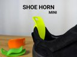
迷你鞋拔（鑰匙圈款）13,068 次下載約 14 g約 47 分Shoe Horn注意尺寸小、受力集中
微調填充 100%、外壁 4 圈，0.12mm；掛孔改用 4mm 金屬環較耐用 兒童鞋拔2,872 次下載約 28 g約 1 小時Shoe horn for children's shoes注意薄片彎角是斷裂點
微調PETG 或 PLA+ 印，0.16mm；順著彎曲方向平躺，別立著印 鞋帶快扣（旋鈕式）1,583 次下載約 2 g約 14 分Schnellverschluss Kordelband Schuhriemen注意螺紋件，層高太大會卡死
微調0.12mm、螺紋處降到 30mm/s，別開 ironing；PETG 耐磨 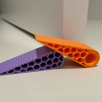
門擋43,035 次下載約 8 g約 29 分Door Stopper注意磁磚或木地板止滑差
微調底面貼 TPU 墊、填充 40%
三、廚房
廚房的問題通常不是買不到，而是「尺寸剛好不合」。
鍋蓋、袋口、瓶罐、調味包，這五件都是先量再印就會成功的類型。
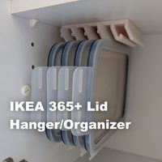
鍋蓋架33,911 次下載約 1350 g約 33 小時Ikea 365+ Plastic Lid Hanger / Organizer注意櫃門厚度不一，掛不上
微調先量門板厚度，掛勾孔位放大 0.3mm 
夾鏈袋／麵包袋夾154,861 次下載約 15 g約 40 分Mini Bag Clip注意卡扣薄、拆裝次數多會斷
微調0.16mm 層高、填充 30%；常開關就改用 PETG 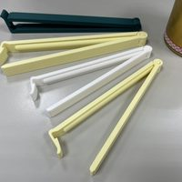
垃圾袋夾38,388 次下載約 32 g約 1 小時Bag Closure Clips注意長時間夾緊會彈性疲乏
微調PETG 印、填充 20%；要更耐用可 70°C 退火 30 分鐘 
瓶罐晾乾架63,936 次下載約 55 g約 2 小時Stackable Bottle Drying Rack注意高瓶重心不穩
微調填充 25%、底面貼矽膠墊 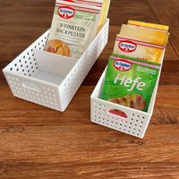
廚房調味包收納14,163 次下載約 72 g約 2 小時Kitchen Packet Organizer / Baking Spice Box注意抽屜深度不合放不進
微調依抽屜內寬縮放，免支撐
四、收納與桌上
抽屜亂、線材纏、小零件找不到，這七件是收納的基本盤。
先印分類盤與線夾，這兩件最容易立刻感受到差別；瓶掛夾適合常帶水壺出門的人。

零件分類盤55,024 次下載約 93 g約 2 小時Parametric Sorting Tray注意多個疊放時公差累積
微調XY 補償 −0.05mm、0.2mm 層高 
線材整線器56,264 次下載約 40 g約 1.5 小時Ergonomic Cable Winder注意夾口尺寸固定，線徑差太多會夾不住
微調依實際線徑縮放 95–105%，填充 25% 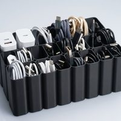
USB 線收納盒46,550 次下載約 114 g約 2.5 小時USB cable organizer Box tray IPhone Samsung注意手機含殼放不進去
微調先量機身尺寸再縮放，內壁 1.6mm 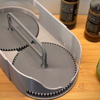
旋轉收納盤21,060 次下載約 461 g約 15 小時Spinning Organizer | Rotating Storage Box注意軸心太緊轉不動
微調軸徑 +0.2mm、XY −0.03mm 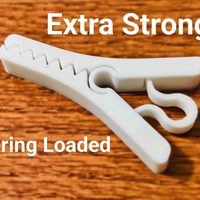
強力洗衣夾20,040 次下載約 7 g約 24 分The Ultimate 3D Printed Clip注意彈簧溝反覆受力易裂
微調PETG、填充 40%、0.2mm 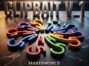
萬用夾（ClipBait）7,757 次下載約 18 g約 43 分ClipBait V_1注意彈性夾臂，PLA 會脆斷
微調PETG 或 PA、外壁 4 圈、0% 填充；夾口可縮 98% 增加夾力 
瓶掛夾（可掛包包／腰帶）3,071 次下載約 44 g約 2 小時Clips Porte Bouteille注意一體成形活動件，間隙太小會黏死
微調0.16mm、XY −0.05mm；印完先輕輕來回扳動再上瓶，PETG 較耐重複拆裝
五、修繕與雜項
鑽牆、走線、桌下這三件事，靠這四件可以少弄髒一點、少爬一次桌子。
集塵罩是這裡最值得先印的一件，鑽一次牆就知道差別。
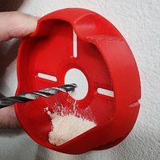
鑽孔集塵罩55,504 次下載約 41 g約 2 小時Drill Dust Collector注意貼牆面不平會漏粉塵
微調免支撐、外壁 3 圈，背面貼 1mm 海綿膠條 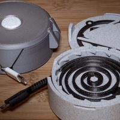
伸縮收線器26,308 次下載約 74 g約 3 小時Retractable Cable Organizer - With Stop注意發條彈簧張力過大會爆開
微調PETG 印發條、0.16mm，先繞 2 圈試張力 
桌下線材收納24,893 次下載約 16 g約 53 分Clean Cable Management Organizer Clip注意桌板厚度不合就夾不住
微調先量桌板，螺絲孔放大 0.3mm 
通用線材固定夾27,350 次下載約 10 g約 28 分universal cable holder V1注意夾口與線徑不合就滑動
微調依線徑縮放、PETG 較耐用
六、身體、睡眠與用藥小物
這三件都跟身體或床鋪直接接觸，尺寸與材質比形狀重要。
分藥器解決「藥錠切一半總是碎掉」，鼻擴張器解決「睡覺鼻塞、打呼」，床單夾解決「睡一睡床單整片跑掉」。三件都建議先用 PETG 印小樣試合，合用再印正式版。

迷你分藥器4,707 次下載約 8 g約 23 分Mini Pill Splitter注意薄刃夾具，PLA 用力會裂
微調PETG 印、0.12mm、外壁 4 圈；藥錠直徑小於 6mm 容易滑，夾口貼一層砂紙增加摩擦 鼻擴張器 v4486 次下載約 1 g約 13 分Nasal Dilator v4注意尺寸不合會壓痛鼻翼
微調先印 95% 試合，PETG 或 TPU 95A、0.12mm、100% 填充；每次使用後清洗 
床單固定夾4,772 次下載約 170 g約 5 小時Pince Anti Drap注意夾力靠彈性臂，PLA 會鬆
微調PETG 印、0.16mm、外壁 4 圈；原作者建議一次印 4 個，床的四角各一個
提醒：分藥器只適用可切分的錠劑，緩釋錠、腸溶錠、膠囊不可切，請依藥師指示使用。鼻擴張器不是醫療器材，若長期鼻塞或睡眠問題，請就醫。
七、A1 的參數（這幾類都適用）
| 情境 | 層高 | 外壁 | 填充 | 材料 |
|---|
| 一般收納、托盤 | 0.20mm | 3 圈 | 15% | PLA |
| 卡扣、夾具、掛勾 | 0.16mm | 4 圈 | 25% | PETG |
| 螺紋、滑軌、快扣 | 0.12mm | 4 圈 | 40% | PETG |
| 薄片（鞋拔、刮刀） | 0.16mm | 3 圈 | 100% | PETG／PLA+ |
A1 上列印這類小件時，把「外壁順序」設成外到內，表面會更平整；螺紋件把外壁速度降到 30mm/s。
八、三種最常見的失敗
- 裝不進去：XY 補償 −0.05mm，或把卡扣縮 98%；不要一次縮太多，會鬆到夾不住。
- 一用力就斷：換 PETG、外壁加到 4 圈；PLA 的層間強度明顯低於 PETG。
- 底面翹起：面積大的托盤用 5mm brim、熱床 65°C，第一層速度降到 30mm/s。
九、資料來源與授權
模型皆為 MakerWorld 上公開分享的作品，下載數為抓取當下數字（2026/11/25）。列印前請回原頁確認授權：多數為「可免費列印、不可商業販售」，少數標示可販售。本文只做整理與參數建議，不主張任何模型的所有權。